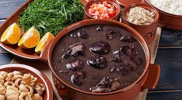
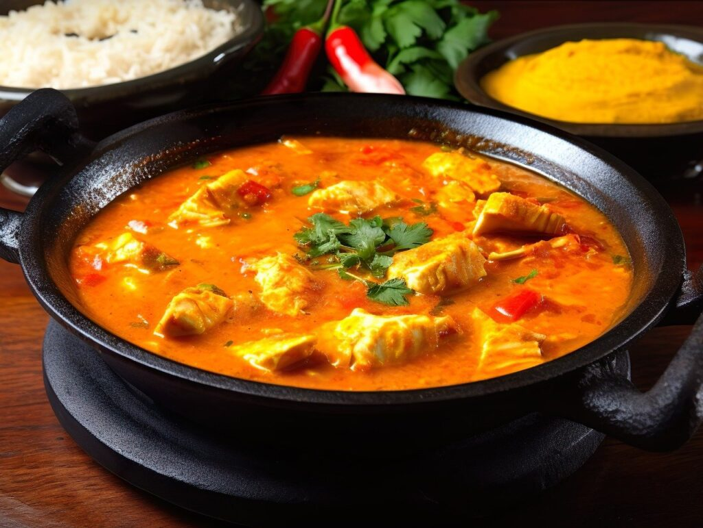

Sobre nós
História do Restaurante Sabor Brasileiro
Era uma vez, no coração vibrante de uma pequena cidade nordestina, o lendário Restaurante Sabor Brasileiro. Dizem que o restaurante não era apenas um lugar para comer, mas um portal mágico para os sabores e as tradições do Brasil. Fundado pelo chef João "Trovão" da Silva, um homem com um apetite tão grande quanto seu coração, o Sabor Brasileiro rapidamente se tornou famoso não apenas por sua comida deliciosa, mas também por seus milagres culinários.A Lenda do Caldeirão de Ouro
A história conta que o chef João, durante uma de suas viagens pela Amazônia em busca dos ingredientes mais raros e autênticos, encontrou um caldeirão feito de ouro puro no fundo de uma caverna escondida. Esse caldeirão, segundo uma antiga profecia, tinha o poder de transformar qualquer prato em uma experiência inesquecível. Com ele, João voltou para sua cidade natal e abriu o Sabor Brasileiro, prometendo trazer um pouco de magia para cada refeição.O Feijão Mágico que Dança
O restaurante ficou famoso por seus pratos que pareciam ter vida própria. Dizem que a feijoada do Sabor Brasileiro era tão irresistível que os grãos de feijão começavam a dançar no prato ao som de um forró ao vivo tocado por sanfoneiros invisíveis. As pessoas vinham de todos os cantos do país só para testemunhar esse fenômeno. Era comum ver o salão cheio de risos e alegria enquanto os clientes dançavam junto com seus pratos!A Moqueca que Traz Sorte
Mas não era só a feijoada que tinha seus segredos. A moqueca de peixe, outro prato famoso, era conhecida por trazer sorte para quem a provava. Reza a lenda que uma vez, um homem simples chamado Zé, que mal conseguia pagar a conta, comeu uma moqueca e, no dia seguinte, encontrou um tesouro enterrado no quintal de sua casa. Desde então, o restaurante passou a ser visitado por pessoas em busca de uma virada de sorte, todas desejando o toque milagroso da moqueca.O Pão de Queijo que Cura
E quem poderia esquecer do pão de queijo do Sabor Brasileiro? Preparado com uma receita secreta que incluía um tipo raro de polvilho vindo das profundezas das florestas de Minas Gerais, o pão de queijo era conhecido por suas propriedades curativas. Pessoas com todo tipo de doença, desde resfriados a corações partidos, juravam que bastava uma mordida para se sentirem renovadas e cheias de energia. Dizem que até um político corrupto teve sua alma purificada depois de provar esse pão de queijo, mas isso nunca foi comprovado!O Chef João e Seu Galo Cozinheiro
Mas talvez a parte mais extraordinária do restaurante fosse o próprio chef João "Trovão" e seu assistente inseparável, um galo chamado Carijó. Carijó não era um galo comum; ele era um galo que sabia cozinhar. Vestido com um chapéu de chef minúsculo, ele ajudava na cozinha, temperando os pratos com seu bico preciso e mexendo os caldeirões com suas penas mágicas. Dizem que, uma vez, Carijó desafiou o próprio Diabo para um duelo culinário e venceu, salvando a cidade de um destino terrível e garantindo a fartura do Sabor Brasileiro para sempre.O Final Feliz
Hoje, o Restaurante Sabor Brasileiro continua sendo um lugar de magia e mistério, onde cada refeição é uma aventura e cada cliente sai com uma história para contar. Se você estiver passando por lá, não perca a chance de experimentar o feijão dançante, a moqueca da sorte ou o pão de queijo curador. E se tiver sorte, poderá ver o chef João e Carijó, o galo mágico, preparando seu próximo milagre culinário! Porque no Sabor Brasileiro, a comida é tão encantada quanto o povo que a prepara!Menu
Nossa especialidade inclui Feijoada, Moqueca, Pão de Queijo, e muito mais.

